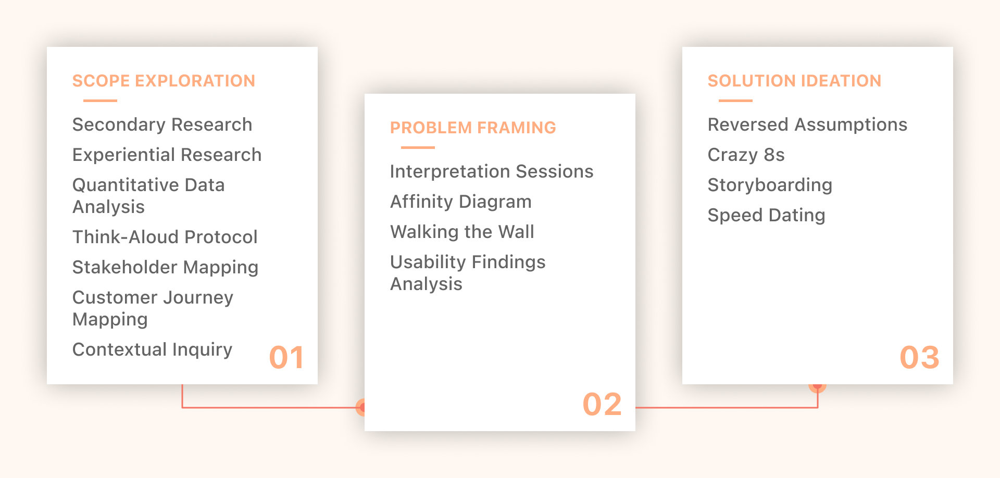
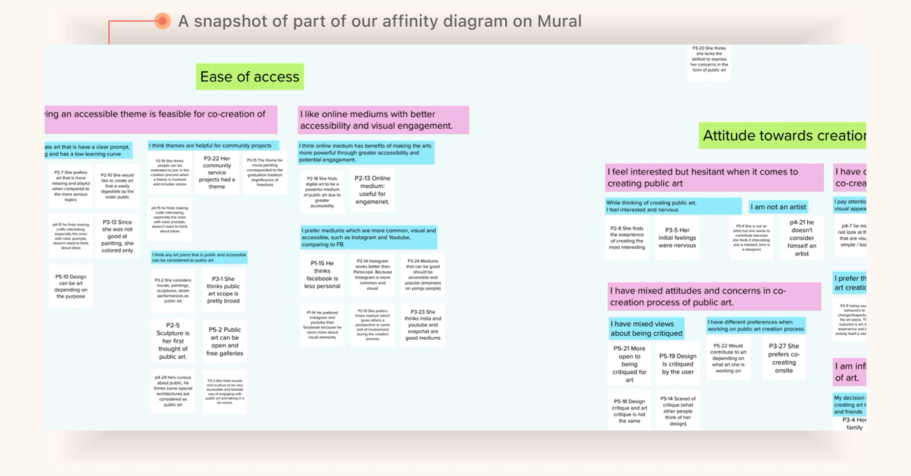
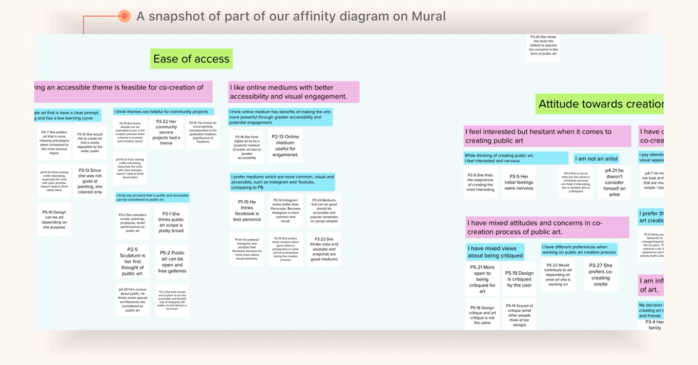

Problem
Public art co-creation is unfamiliar to many, yet this could help foster qualities that make cities more measurably livable.
Insight
People need motivation to enjoy the outcome and experience of co-creating through synchronized working and low threshold for collaboration.
Outcome
A mobile app that uses Augmented Reality (AR) to allow users to co-create art with friends and families on top of existing landmarks around the city
How might we encourage the general public to take part in art co-creation while feeling connected to the community and confident about expressing themselves?
Every form of art is very personal. Even community driven art is personal, but we still lack a system in which each individual creator can contribute in the creation process with lower threshold while enjoying themselves.
Three Phases of Research
Customer Journey Mappping
This customer journey map represents what a first-time co-creator of public art experiences. I gathered this from primary research and visiting public art pieces in downtown Pittsburgh.
Contextual Inquiry and Affinity Diagramming
We interviewed and probed five participants to understand people’s attitude on public art. We identified gaps and opportunities of the public art co-creation process. We then synthesized our results by conducting interpretation sessions for each interview then affinity diagramming.
 

Think-Alouds and Usability Findings
We conducted think-alouds on an art co-creation game online, A Fake Artist Goes to New York. We then gathered insights on users’ needs when collaborating and synthesized our results using usability findings.
Storyboarding and Speed Dating
We determined five potential areas of need and created three comic-based stories for each area. In the speed dating sessions, interviewees were presented with these storyboards and we probed them for their feelings towards each storyboard. The storyboards and speed dating sessions revealed the prioritization of sub-problems.
From the previously stated user research methodologies, our team discovered the following insights:
Motivation for Outcome and Process
People need motivation to enjoy the outcome and experience of co-creating. Friends and family members can also serve as motivation for people to participate in the art co-creation process. People also value the process more than the final product.
Building the Community through Interactions
People value working in a synchronized environment, which also gives them the sense of building the community. Synchronized collaboration enables interactions among participants and inspires creativity through real-time communication.
Low Threshold for Collaboration
There needs to be a low threshold for the art co-creation process for people to feel comfortable to participate in it. Each contributor should be able to express themselves alongside their friends.
Negative Critique Unwelcome
People fear negative critique, so it’s important that people are not exposed to this. Since art is very personal, people also feel that art critique is personal.
CreArt is an AR art co-creation app that allows users to co-create art with friends and families on top of existing landmarks around the city.
Livability
We identified that art co-creation contributes to the livability of a city. CreArt contributes to the livability of a city by...
- Encouraging community building through interactions with co-citizens
- Integrating real-world locations into people’s creations
- Generating relatable themes about the city and the residing communities
Motivation
Motivation is essential in bringing people to co-create art. CreArt helps generate users' motivation by...
- Using social influences to draw people into art co-creation
- Strengthening the feeling of community through the art co-creation process
- Providing attractive themes that spark users' creativity and curiosity
Collaboration
The design of the co-creation itself is important to users. CreArt improves the collaboration experience by...
- Enabling interactions among participants through synchronized collaboration
- Inspiring users' creativity through real-time communication
- Allowing users to view past works on related themes to figure out what to do, especially for those with no prior experience
- Connecting users virtually so they can create art even at home
Uniqueness
CreArt is a uniquely designed platform that aims to increase the livability of the city by...
- Allowing users to create art without training (against sculpting, oil painting, etc)
- Collecting a permanent archive of art, in contrast to temporary pieces of public art
- Creating a positive culture and feedback through users' "hearting" of others' works
Measurability
CreArt can measure its impact on specific aspects of the livability of a city, such as:
- The community building aspect through time spent with friends and family
- The vibrancy of the city's identity through social media shares and time spent in landmarks
- The engagement of citizens to city life through number of revisits to landmarks
Journey
Screen Designs
Lessons Learned
In this process, I learned numerous user research methods, such as contextual interviews, affinity diagramming, think-alouds, and storyboarding and speed dating. These methods were especially difficult to use and learn from in the face of social distancing and lockdown guidelines, so all of these methods were conducted online. In light of this, I learned how to work better with teammates online and be more analytical, especially in probing interviewees for insights and unique discoveries.